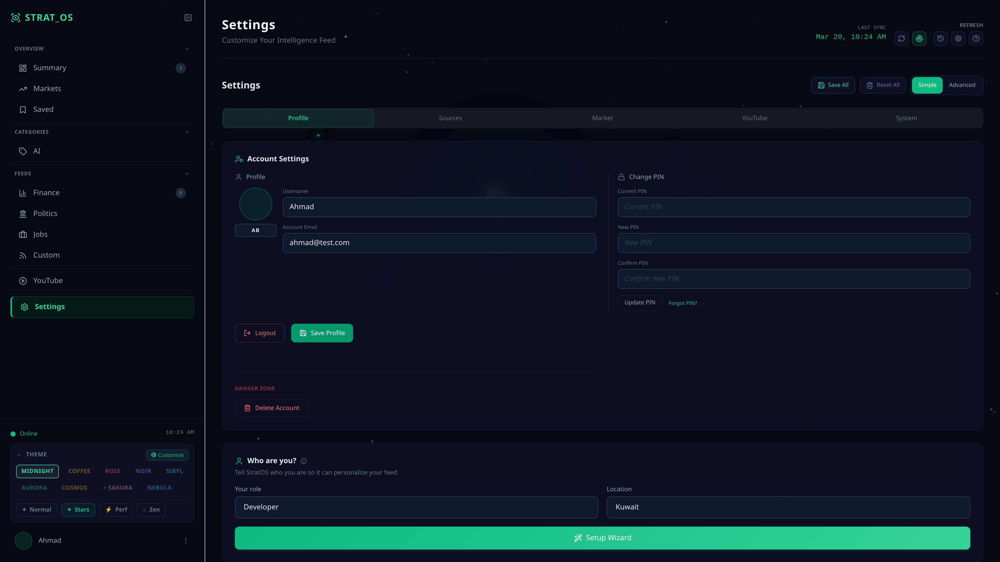
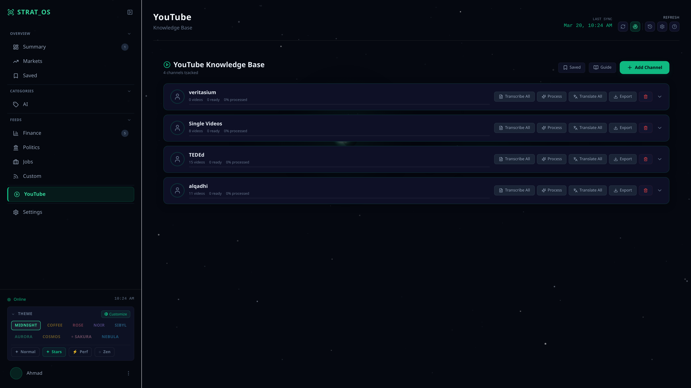
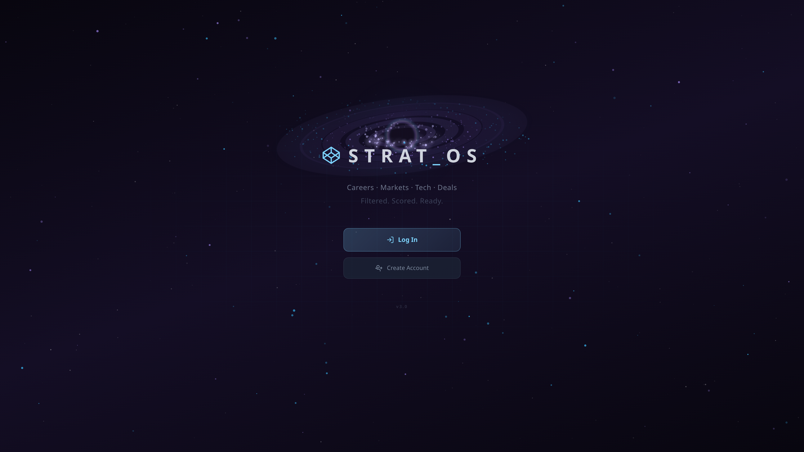

Strategic Intelligence Operating System
"Tell the system who you are, and it tells you what matters today."
A self-hosted intelligence platform that aggregates news, tracks markets, and scores content relevance using a locally fine-tuned AI model. Features a 6-persona AI agent, YouTube knowledge base with 7 lenses, RP chat system with tiered memory and branching timelines, a production React Native mobile app (105+ commits), AI image generation via ComfyUI, and dual TTS/STT. The scorer improves itself through a distillation loop — Gemini Flash and Claude Opus re-score articles, disagreements become training data, and DoRA fine-tuning updates the local model. 4-mode platform vision: Intelligence, Anime/Manga, Collection/TCG, Gaming.
111,000+ lines · 192 files · 1,018 commits · Solo project · Zero cloud dependency for inference
| Metric | V1 Baseline | V2 | V2.2 Production |
|---|---|---|---|
| Direction Accuracy | 90.7% | 91.7% | 94.5% |
| Mean Absolute Error | 1.553 | 1.544 | 0.914 |
| Spearman ρ | — | 0.555 | 0.691 |
| Within 1 Point | — | 53.4% | 75.5% |
| Parse Failures | — | 5.0% | 0.0% |
| Training Cost | ~$17 | ~$60 | ~$6 |
Two-tier feedback loop: implicit user signals (save/dismiss/rate) plus Gemini Flash and Claude Opus distillation at ~$6/generation. Disagreements become training data that permanently updates local model weights.
Same article, different score depending on who's reading. A K-pop manager gets 8.5 on idol news; a pipeline welder gets 0.0. V2 spread jumped from 1.04 to 7.90.
Candlestick, line, and area charts via Lightweight Charts with 20 drawing tools, Fibonacci retracement, auto-trend lines, and fullscreen focus mode.
Context-aware AI chat with 11 tools across 6 personas — Intelligence, Market, Scholarly, Gaming, Anime, TCG. Fullscreen mode with Claude/ChatGPT-style sidebar, suggestion chips, and conversation management.
Production-grade mobile app built with React Native + Expo 54 + TypeScript. 5 themes, SSE streaming, character creator with TavernCard V2 import, RP chat with swipe/branch/edit. 105+ commits, 7,825 lines.
Midnight, Noir, Coffee, Rose, Cosmos, Nebula, Aurora, Sakura — each with Normal, Brighter, and Deeper OLED variants (24 total). Every theme has a unique visual element.
Email-based auth with 5-digit verification codes, forgot-password flow, session tokens with expiry, and per-user rate limiting. PIN fallback for local access.
Theme, avatar, and UI preferences persist across devices via DB-backed per-profile sync. Log in from your phone and pick up exactly where you left off.
3-step wizard walks new users from zero to a fully configured dashboard in under 2 minutes. AI generates categories and tickers from your role and location.
Add YouTube channels and auto-extract knowledge from every video using 7 AI-powered lenses: summary, key insights, entities, timeline, eloquence, transcript, and Q&A.
Dual text-to-speech engine — Kokoro (local neural TTS) and Edge-TTS (cloud fallback) — with voice selection, speed control, and article narration.
AI-powered narration source verification — analyzes article credibility, cross-references claims, and flags potential misinformation before you read.
Roleplay chat with 6-archetype detection, per-turn prompt injection, 3-tier memory (facts, recent, arc summaries), swipe regeneration, branching timelines, and director notes. Powered by Cydonia 24B.
Click any screenshot to view full-size. Executive summary, market charts, settings, YouTube knowledge base, and themed login.





The same article scores completely differently depending on who's reading. Select an article to see real V2 evaluation data across five profiles.
Real evaluation results from the V2 scorer (2,048 test examples)
Rank correlation between V2 predictions and ground truth. V2.2 achieves an overall ρ of 0.691 (+24.5% vs V2). Hover to see details.
Entirely local-first. Zero recurring costs for inference. The only paid component is optional distillation at ~$6 per training generation (90% cheaper than V2).
19 failed training runs. Each one taught something the documentation never mentioned. The path from a flat scorer to 94.5% direction accuracy wasn't straight.
5,679 examples with Sonnet distillation. Answer-only format (SCORE: X | REASON: Y) without reasoning traces. Model memorized patterns, gave everything 8.0–8.5. Profile awareness spread: 1.04 — essentially random.
~$17 · FailedResearch confirmed the issue: Orca showed imitation models learn style, not reasoning. Only explanation tuning transfers capability. The model needed to see the "thinking" process, not just the answer.
Key insightTORCH_ROCM_AOTRITON_ENABLE_EXPERIMENTAL=1 causes NaN during backward pass with DoRA + gradient checkpointing + bf16 on 7900 XTX. Days of debugging. Solution: keep disabled for training.
Hardware painSwitched to Opus Batch API for teacher scoring. 20,550 examples across 30 profiles in 20 countries. Qwen3's native <think> blocks enabled natural CoT training. DeepSeek-R1 showed distillation into 8B could beat GPT-4o.
~$52 · Breakthrough10.7 hours training on 7900 XTX. Profile awareness jumped from 1.04 to 7.90 (7.6×). Zero parse failures across 2,048 eval examples. First production deployment.
DeployedAttempted to include chain-of-thought text in training. MAE exploded to 3.244, direction accuracy crashed to 53.5%. Changed 4+ variables simultaneously — broke the fundamental rule of one change per version.
Catastrophic · Lesson learnedSwitched to Qwen3.5-9B base and Gemini Flash as teacher (90% cost reduction: $60 → $6). 11,785 examples across 45 profiles. MAE: 0.914 (41% reduction vs V2). Spearman ρ: 0.691 (+24.5%). Zero parse failures. 7 hours on 7900 XTX.
Current productionI'm a Computer Engineering student at the American University of Kuwait, graduating Spring 2027. StratOS started because I was tired of opening a dozen tabs every morning — jobs, news, stocks, tech — just to feel caught up. I wanted one place to be "in the know" on everything I care about, ranked by how much it actually matters to me. So I built it.
That "one place" somehow turned into 111,000+ lines of code across 192 files — a self-improving AI scorer across 3 training generations, a production React Native mobile app (105+ commits), an RP chat system with branching timelines and tiered memory, AI image generation, dual TTS engines, a YouTube knowledge base, and 6 AI personas. The distillation pipeline went from $60 to $6 per cycle while getting 40% more accurate. I focus on ML pipelines, full-stack systems with local-first principles, and getting GPU training to work on AMD hardware — which, if you know ROCm, you know is its own adventure.
I'm looking for systems and ML engineering roles in Kuwait's energy sector, where AI meets industrial operations and the problems are actually interesting.
A self-improving pipeline. Hover to isolate specific data pathways. Click any node to inspect telemetry.